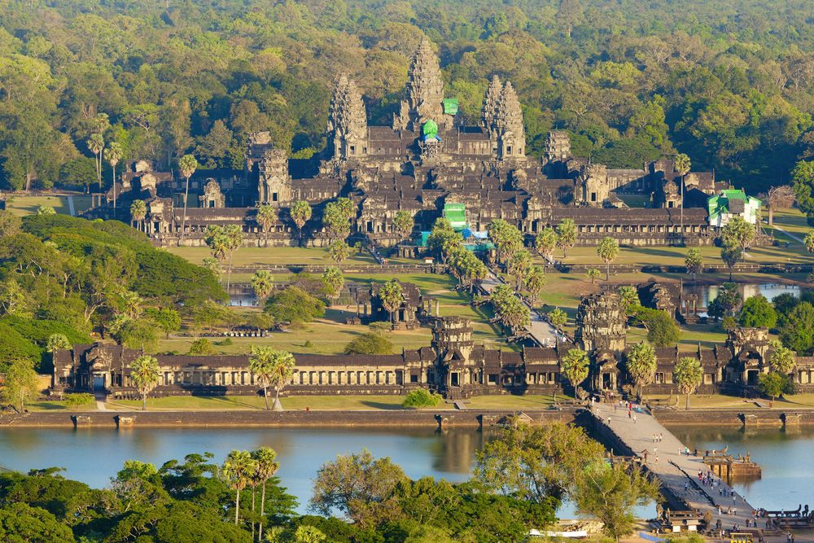

🌸 Kingdom of Wonder Tourism 🌸
🌸 Kingdom of Wonder Tourism 🌸
🌸 Kingdom of Wonder Tourism 🌸
🌸 Kingdom of Wonder Tourism 🌸

Angkor Wat is a temple complex in Cambodia and the largest religious monument in the world, on a site measuring 162.6 hectares. Originally constructed as a Hindu temple dedicated to Vishnu for the Khmer Empire, it gradually transformed into a Buddhist temple towards the end of the 12th century. Built by Khmer King Suryavarman II in the early 12th century, it has become a symbol of Cambodia, appearing on its national flag.

The south gate of Angkor Thom is most popular with visitors, as it has been fully restored and many of the heads (mostly copies) remain in place. The gate is on the main road into Angkor Thom from Angkor Wat, and it gets very busy at peak times. The city of Angkor Thom consists of a square enclosure of nearly 10 km² and was the last capital of the Khmer Empire.

Banteay Srei is a 10th-century Cambodian temple dedicated to the Hindu god Shiva. Located in the area of Angkor, it lies near the hill of Phnom Dei, 25 km north-east of the main group of temples. Built largely of red sandstone, it features elaborate decorative wall carvings still observable today. Its miniature scale and intricate detail have made it widely praised as the "jewel of Khmer art."
Angkor Wat is a temple complex in Cambodia and the largest religious monument in the world, on a site measuring 162.6 hectares (1,626,000 m2; 402 acres). It was originally constructed as a Hindu temple dedicated to the god Vishnu for the Khmer Empire, gradually transforming into a Buddhist temple towards the end of the 12th century. It was built by the Khmer King Suryavarman II in the early 12th century in Yasodharapura, the capital of the Khmer Empire, as his state temple and eventual mausoleum. Breaking from the Shaiva tradition of previous kings, Angkor Wat was instead dedicated to Vishnu. As the best-preserved temple at the site, it is the only one to have remained a significant religious centre since its foundation. The temple is at the top of the high classical style of Khmer architecture. It has become a symbol of Cambodia, appearing on its national flag, and it is the country's prime attraction for visitors.
Angkor Wat combines two basic plans of Khmer temple architecture: the temple-mountain and the later galleried temple. It is designed to represent Mount Meru, home of the devas in Hindu mythology; within a moat and an outer wall 3.6 kilometres (2.2 mi) long are three rectangular galleries, each raised above the next. At the centre of the temple stands a quincunx of towers.
The city of Angkor Thom consists of a square walled and moated enclosure nearly 10 km², with a state temple at its centre and several other major monuments. The south gate of Angkor Thom is most popular with visitors, as it has been fully restored and many of the heads (mostly copies) remain in place. The gate is on the main road into Angkor Thom from Angkor Wat, and it gets very busy at peak times.

Banteay Srei is a 10th-century Cambodian temple dedicated to the Hindu god Shiva. Located in the area of Angkor, it lies near the hill of Phnom Dei, 25 km north-east of the main group of temples that once belonged to the medieval capitals of Yasodharapura and Angkor Thom. Banteay Srei is built largely of red sandstone, a medium that lends itself to the elaborate decorative wall carvings which are still observable today. Consecrated on 22 April 967 A.D., it remains one of the best-preserved and most celebrated temples in the Angkor region.